What these signs do
Right-of-way signs settle who goes first where roads meet. Some give you the right of way, and others require you to let other traffic pass. They are the family with the most varied shapes. Two of those shapes are used by no other sign, on purpose, so you can recognize them instantly even from behind or when snow or dirt hides the symbol. The junction signs further down are point-up red-bordered triangles, the shape the warning family uses, and they are right-of-way signs all the same.
In the official classification these belong to the regulatory signs (segnali di prescrizione), the signs that impose a rule, alongside prohibition and mandatory signs. So a yield sign is correctly called both a right-of-way sign and a regulatory sign: a question saying it "is a regulatory sign" is true, and one calling it a prohibition, a warning or an information sign is false.
The deepest difference for an American: priority to the right. In the US nearly every intersection is controlled: by a light, a stop or yield sign, or road hierarchy. In Italy (as in most of continental Europe), where nothing decides (no sign, no light, no officer) the default rule applies: yield to whoever comes from your right. The apparent size or importance of the road counts for nothing: a small side road entering from the right can legally have priority over your larger-looking road if no sign says otherwise. The signs of this family are the exceptions to that default rule, and this review takes them by meaning: stop and yield first, then the priority road, then the junction signs.
Stop and yield
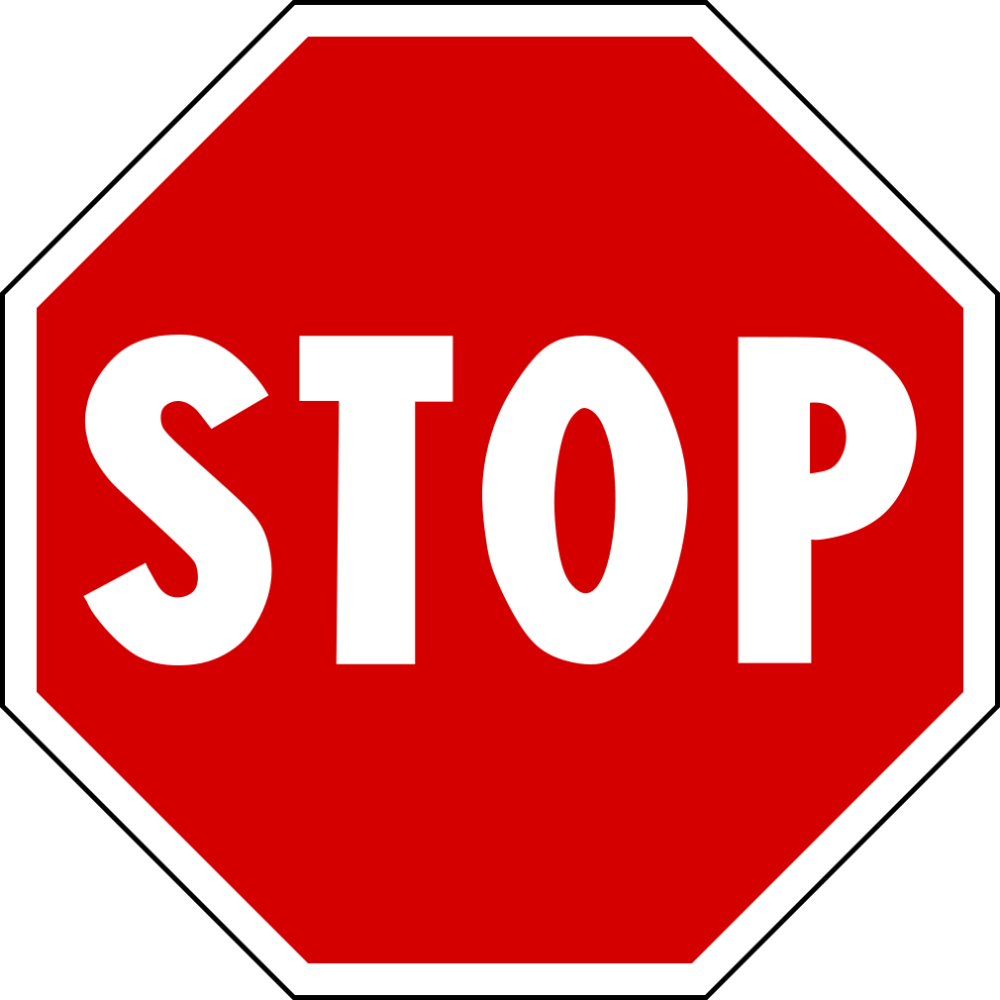
- The octagon (red, with "STOP") means stop and yield (fermarsi e dare precedenza): come to a complete halt at the transverse stop line, or before the junction, every time, then yield before proceeding, exactly like the US STOP sign. The sign stands on the road without priority, so the road you are about to meet is the one with the right of way (strada con diritto di precedenza).
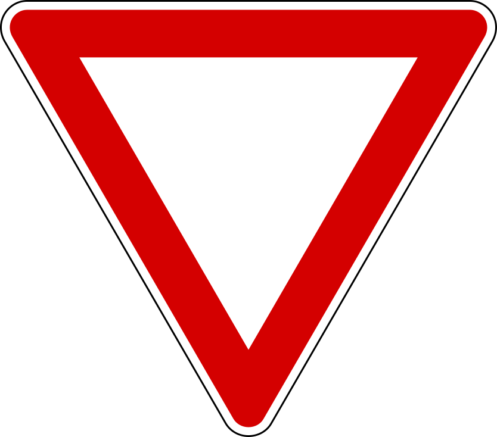
- The inverted triangle (white, red border) means yield (dare precedenza): slow down, be ready to stop, and stop only if traffic is coming. You need not halt if the way is clear, and the sign has the same shape and meaning as the US YIELD sign. When a stop is needed, it is made at the transverse line of white triangles painted across the lane at the sign. The duty covers traffic from both directions, left as well as right, so it is not the priority-to-the-right rule.
The difference between the two is the halt: STOP means a full stop every time, yield means stop only if needed. STOP is normally used at junctions with poor visibility or particular danger, and it can also guard a railroad crossing. The two signs share one more trait: theirs are unique shapes, used by no other sign, precisely so they stay unmistakable from any angle, even from behind or when snow or dirt hides the symbol.
Both signs stand at the junction itself. A placement figure like 150 m (165 yd) belongs only to their advance-notice versions. On an autostrada the yield sign stands at the end of the entry ramp, where you merge.
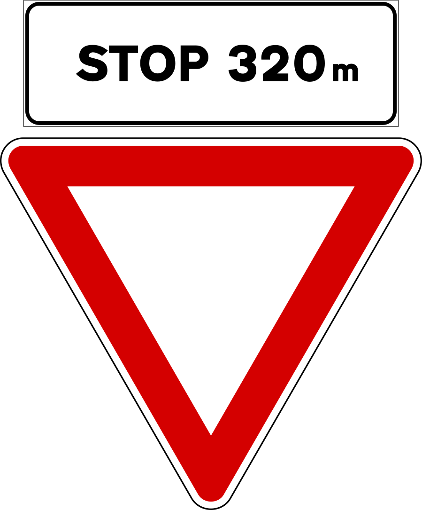
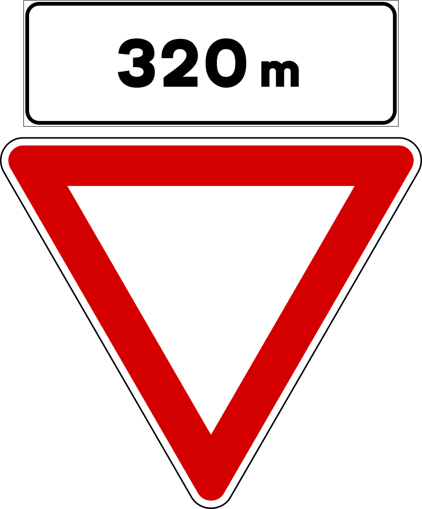
STOP and yield both have advance versions, shown here: the same sign with a distance panel, placed farther back (on extra-urban roads, where approach speeds are high) so you can slow down in time. A "STOP 320 m" panel announces a stop sign that far ahead (preavviso di fermarsi e dare precedenza); a plain "320 m" (about 350 yd) panel announces a yield sign that far ahead (preavviso di dare precedenza). You will have to stop there, not here, and each notice announces only its own sign.
Outside built-up areas the advance version is the rule rather than an option: the yield sign at the junction is preceded by the PREAVVISO DI DARE PRECEDENZA, and the STOP sign at the junction by the PREAVVISO DI FERMARSI E DARE PRECEDENZA. In town, where you arrive slowly and there is rarely room for it, the sign at the junction usually stands alone. Both signs are used on urban and extra-urban roads alike.
The priority road and its end
A priority road (strada con diritto di precedenza) is a road on which you keep the right of way at every intersection, because every road that crosses it carries a YIELD or STOP sign. Two things hold along its whole length. For Americans, its sign is the topic's big false friend: at home a yellow diamond means warning, and no US sign grants priority at all (priority exists only implicitly, because the side streets got the stop signs); here the diamond grants it. And priority never excuses caution: "we can proceed without care, since we have the right of way" is always false. You must still moderate your speed near junctions, make sure vehicles from the side roads are actually yielding, and yield regardless to emergency vehicles with the blue light and siren on.
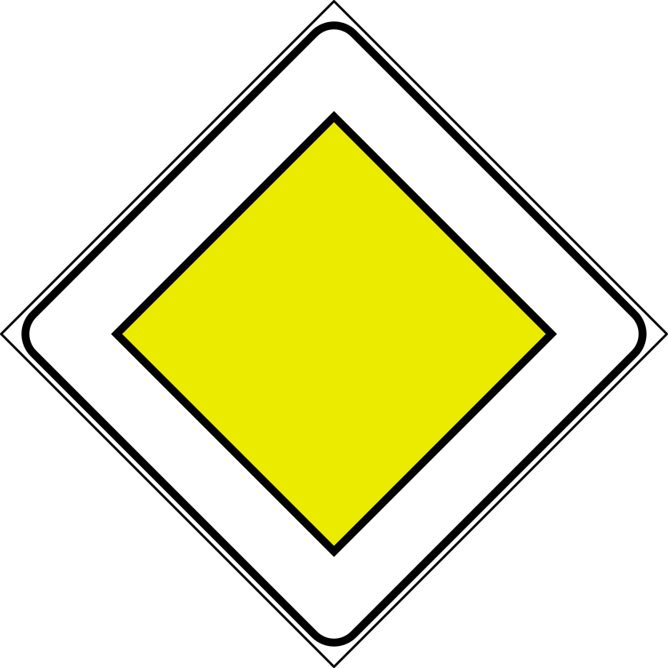
- The diamond (a square set on its point, orange-yellow with a white border) marks the start (or continuation) of the priority road, urban or extra-urban, never the start of an autostrada. The color alone does not identify it: work-zone signage is also yellow, but there yellow is the temporary background; on the diamond, yellow is the sign's permanent identity, and a road work site is announced by the worker triangle, never by this diamond.
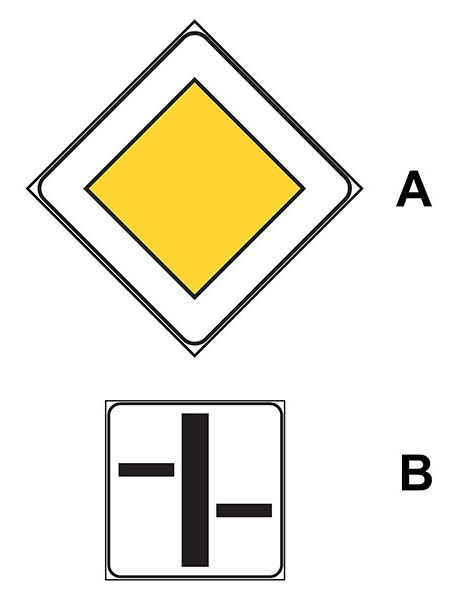
- The priority-road diamond (A) can be repeated in small format before and after each junction, with a supplementary panel drawing the course of the priority road through the intersection.
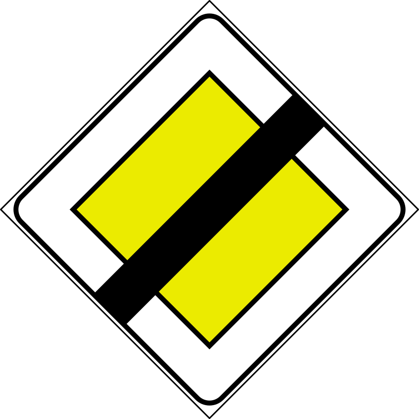
- The diamond crossed by a black band marks the end of that priority. From there the general rule returns: yield to traffic from the right, so watch your right from here on, and the end sign may even be followed by a yield or STOP sign at the very next junction.
Each sign belongs to one road. The yield and STOP signs stand on the road without priority. The yellow diamond and the priority-junction triangles stand on the road that has it. The two families never precede one another: what precedes a yield sign is its own advance notice above, never the DIRITTO DI PRECEDENZA diamond.
Junction priority signs
Several red-bordered, point-up triangles announce a junction ahead and show its arrangement. Being triangles, they only announce: they stand well before the junction (about 150 m / 165 yd outside of town), never just 25–50 m from it, and the actual obligation, when there is one, is set by the sign at the junction itself. Note the contrast with the point-down yield triangle above, which imposes its obligation on the spot.
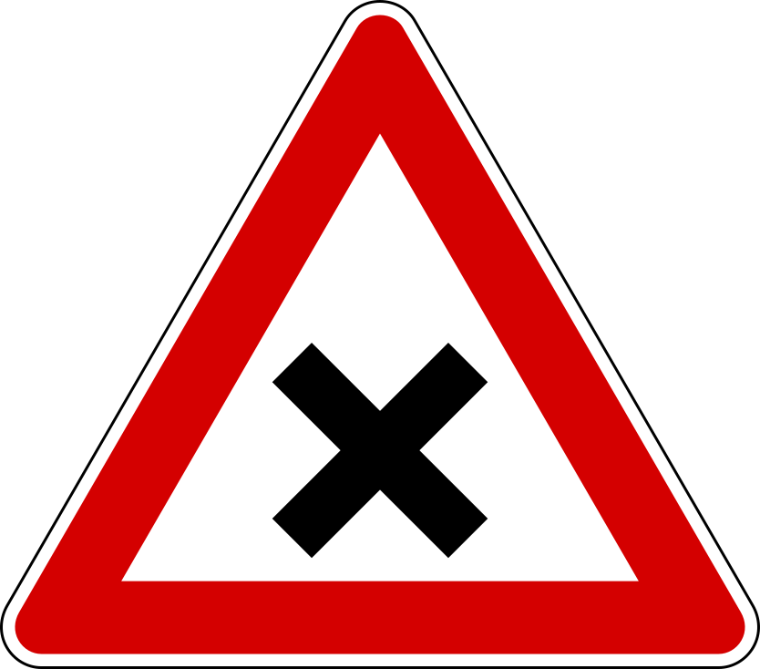
- The X (no thick bar) announces a junction where the general rule applies: yield to the right. It stands on a road with the same standing as the one it crosses, never on the priority road, and it precedes neither a yield nor a STOP sign. Slow down particularly, yield to the right, stopping if necessary, and make sure drivers coming from your left are prepared to yield to you.
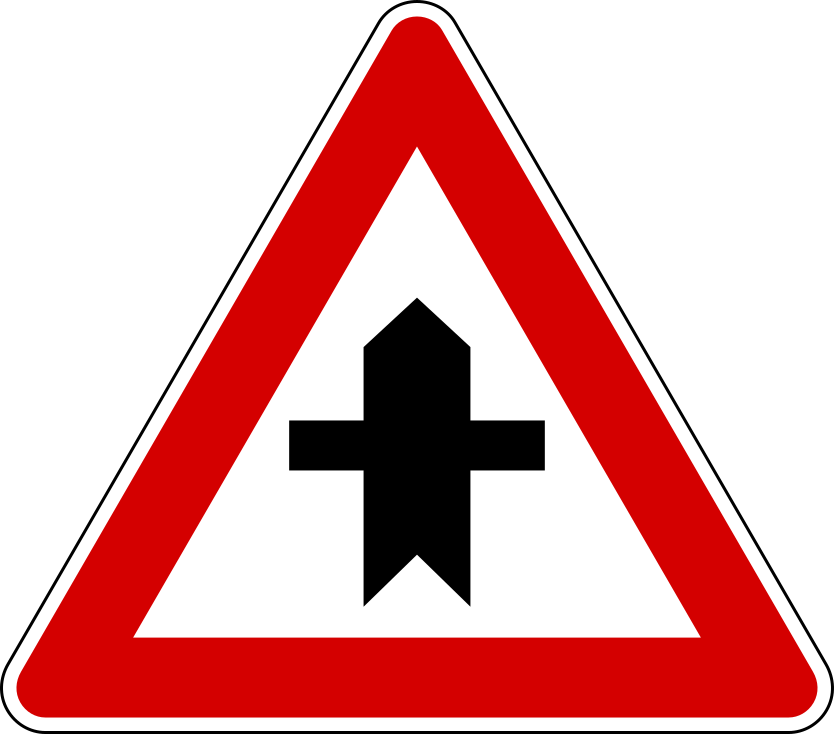
- The thick bar with a thin cross means you are on the road with priority at the coming crossroads. The thick vertical bar is your road; what joins it shows who must wait. On such a road it may be preceded by the DIRITTO DI PRECEDENZA diamond from the previous section: the diamond opens the priority road, and this triangle then announces each junction along it. At that crossroads you have priority over vehicles coming from both sides, left as well as right, and the duty it leaves you is to slow down and make sure they are giving it to you.
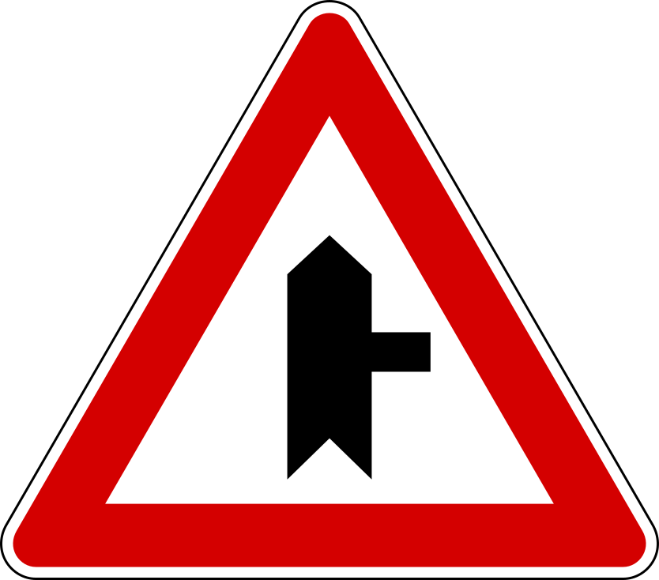
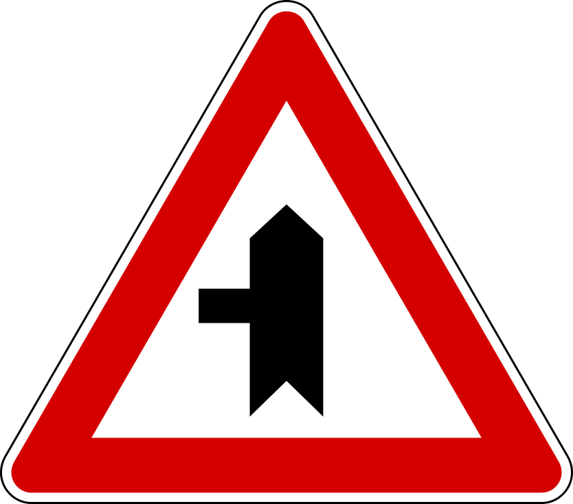
- The side-road versions show a minor road joining from the right or the left. You have priority over it, the diamond may precede them as it does the crossroads version, and the same duty of care applies: moderate your speed and make sure the vehicles joining are prepared to yield.
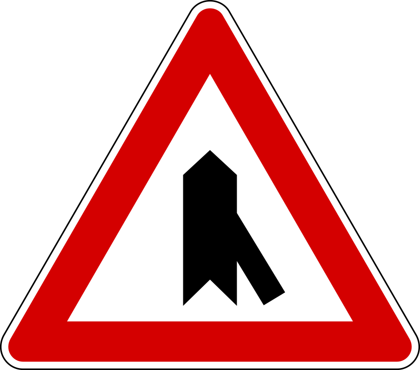
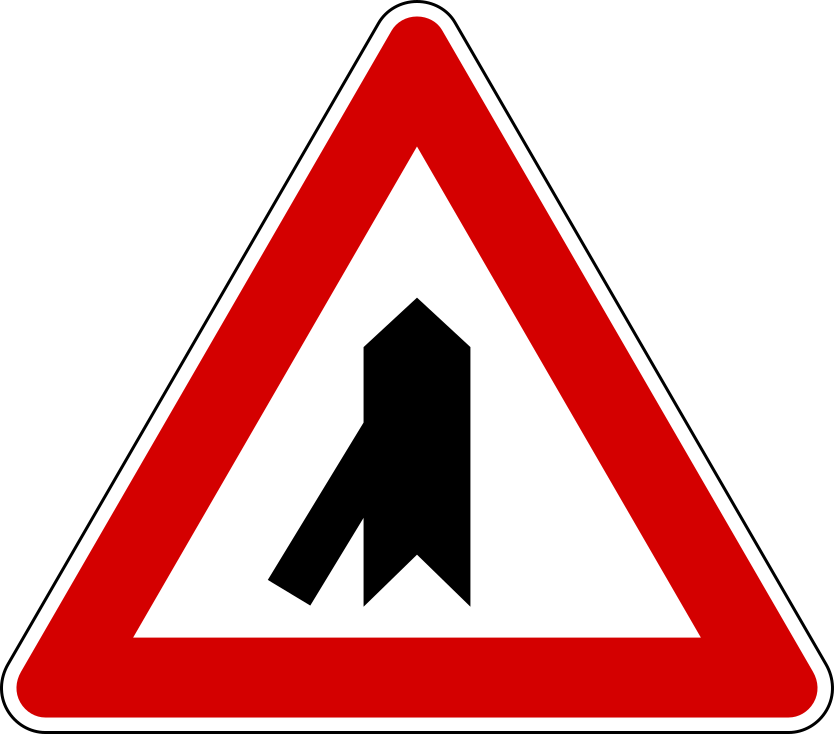
- The merge (confluenza) versions show a road curving into yours, from the right or the left, typically with an acceleration lane. These stand on priority roads, on carriageways carrying one-way traffic, autostrade included. You have priority; the ramp carries the YIELD sign. Even so, take particular care with vehicles coming off the ramp and make their merging easier where you can.
The crossroads versions never appear on an autostrada, which has no at-grade junctions, nor on its access ramps. Only the merge versions do.
The narrow-section pair
Where a stretch is too narrow for two-way passage (a bottleneck, a work site, an alternating one-way stretch), a pair of opposite signs sets the order.
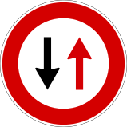
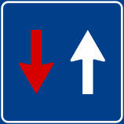
- The round, red-bordered disc with two vertical arrows means you must yield to oncoming traffic, because a red-bordered circle always restricts you; its official name is dare precedenza nei sensi unici alternati, literally "yield in alternating one-way sections", and dare (give) marks the yielding side. It normally stands on a two-way road before a narrowing wide enough for one line of vehicles, and also where part of the carriageway is closed for road work; it announces neither a work site nor a two-way section as such, only who waits. It is helpful to keep in mind that this sign works as a pair with the blue square shown beside it, which faces the drivers coming the other way. That blue square is a regulatory sign as well, and it grants rather than restricts, officially diritto di precedenza nei sensi unici alternati, "right of way in alternating one-way sections", with diritto (right) marking the side that goes first.
Even with the blue square, priority is not a free pass: proceed with caution, and enter the narrow stretch only after making sure oncoming traffic is actually yielding. And watch the two official names: DARE precedenza is the red-bordered disc (you yield), DIRITTO di precedenza is the blue square (you go first). The most common mistake is attaching one sign's name to the other.
Signs and traffic lights together
To an American eye the pairing itself looks odd: at home a junction has either a stop sign or a light, almost never both. In Italy the sign stays posted permanently beside the light, with no contradiction, because it is the fallback. When the intersection has working traffic lights, the lights govern and the yield, STOP, or narrow-section sign waits in the background. The sign takes over when the light is off or flashing yellow. The questions drill this pattern on both narrow-section signs:
- With the round red-bordered sign, the one that makes you yield, a green light means you go and a red light means you stop. With the light off or flashing yellow, the sign rules, and you yield.
- With the blue square, the one that gives you priority, a green light means you go. With the light off or flashing yellow, the sign rules, and you have priority, but flashing yellow still demands extra caution.
And above both stands the traffic officer: an officer's order overrides the light and the sign alike: you stop on green if ordered, and you proceed on red if waved through.
How the exam phrases it. These statements read like broken sentences on purpose: "we have the right of way if the light is green, but the officer is ordering us to stop." Read them as scenario descriptions, both things are happening at once, and then apply the one rule that never fails: the officer outranks everything. With a green light and an officer ordering a stop, you stop, so "we have the right of way" is false. With a red light and an officer waving you on, you go.
Summary of key points
- Right-of-way signs decide who goes first; they are regulatory signs.
- The inverted triangle (yield) and octagon (stop) are unique shapes, recognizable even when obscured, and identical to their US counterparts.
- Yield means stop only if needed. Stop means a complete halt every time. A distance panel makes either an advance notice.
- The yellow diamond is Italy's big false friend: not a warning but a priority road. Cross streets get YIELD or STOP. With a black band it marks where priority ends and the yield-to-the-right rule returns.
- In a narrow section, the round red-bordered sign means you yield; the blue square means you have priority, used with caution, after checking that oncoming traffic yields.
- Triangular junction signs announce ahead; the thick bar is your road. Merge versions stand on priority roads, and the entering ramp carries the YIELD sign.
- A working traffic light overrides the sign; the sign applies when the light is off or flashing yellow. Priority never excuses carelessness.